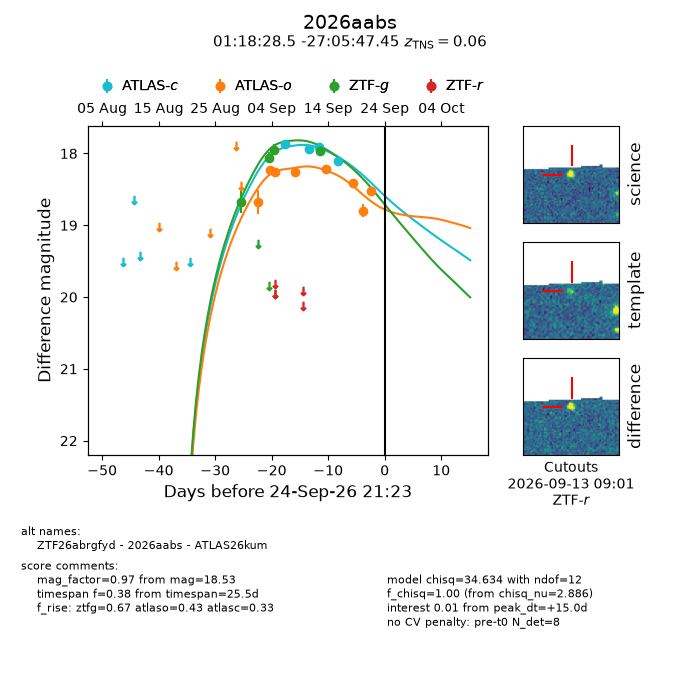
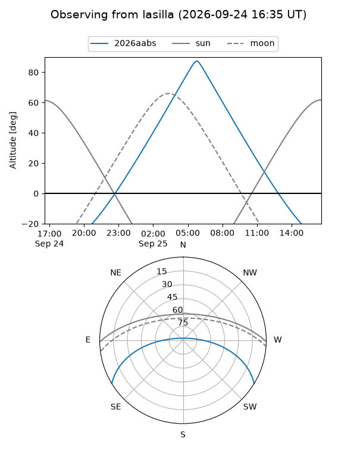
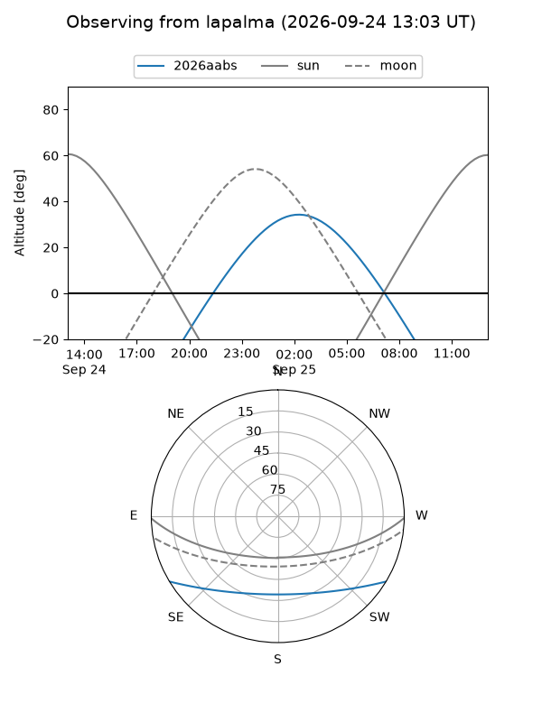
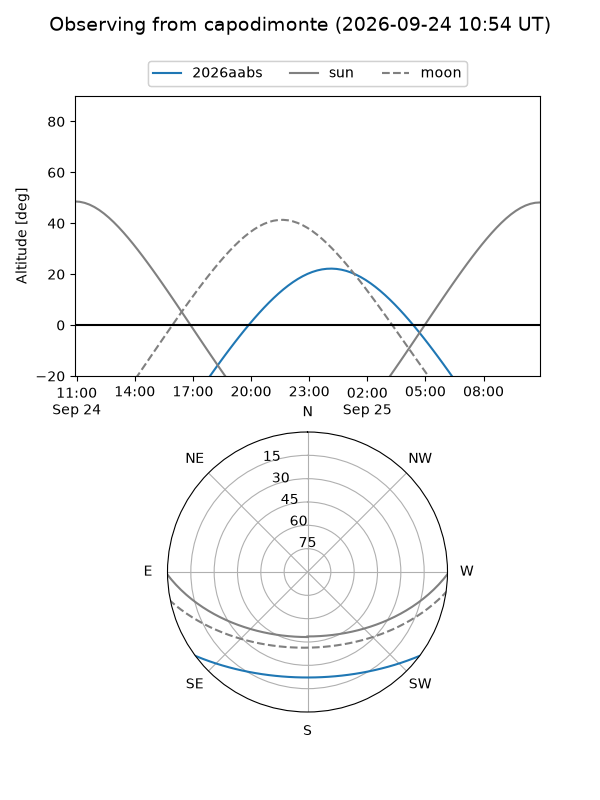
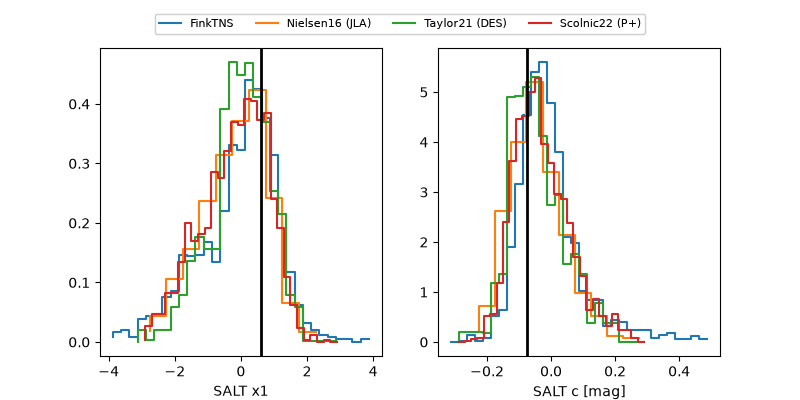

2026aabs
Target 2026aabs at 2026-09-24 21:30
Aliases and brokers:
FINK-ZTF: ztf.fink-portal.org/ZTF26abrgfyd
Lasair-ZTF: lasair-ztf.lsst.ac.uk/objects/ZTF26abrgfyd
ALeRCE-ZTF: alerce.online/object/ZTF26abrgfyd
YSE-PZ: ziggy.ucolick.org/yse/transient_detail/2026aabs
TNS name: wis-tns.org/object/2026aabs
Direct TNS query: direct search
alt names
ZTF26abrgfyd (ztf,fink_ztf)
2026aabs (tns,yse)
ATLAS26kum (atlas)
Coordinates:
equatorial (ra, dec) = 19.6187,-27.09651
equatorial (HMS+DMS) = 01:18:28.48,-27:05:47.45
galactic (l, b) = (214.1717,-83.98418)
Flags:
TNS type: SN Ia
TNS redshift: 0.0600
peak dt: +15.0
Photometry:
last atlasc=18.10, atlaso=18.53, ztfg=17.96
4 atlasc, 8 atlaso, 4 ztfg detections
Lightcurve

Visibility



Additional plots
